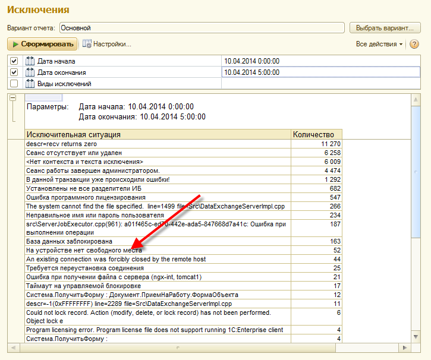
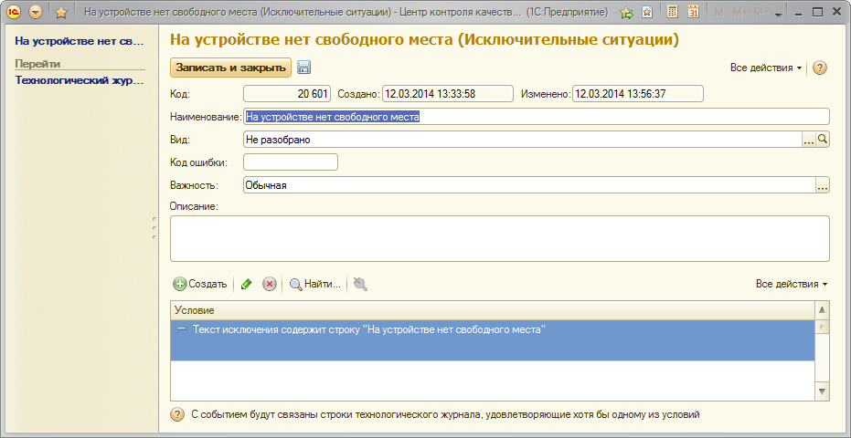
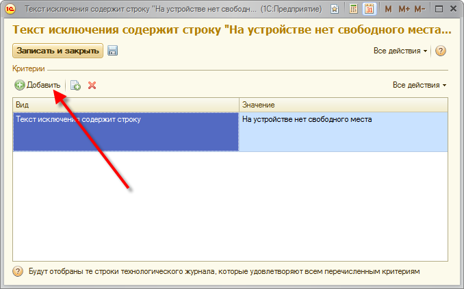

Исключения
Отчет "Исключения" позволяет получить группировку по всем типам исключений за выбранный период.
Под исключениями подразумеваются события EXCP в технологическом журнале.

Двойное нажатие на любую строку отчета позволяет получить более подробную информацию по агрегату события

В настройке агрегата можно задать тип исключения, подробное описание события и назначить условия, по которым будет получаться агрегирующее событие.

Изменение критериев агрегации приведет к тому, что все события будут пересчитаны в соответствие с новыми критериями.
При работе с отчетом необходимо учитывать, что он используется данные за небольшой период времени. Старые данные автоматически удаляются. Настроить удаление данных можно в контрольной процедуре «Мониторинг системных ошибок»